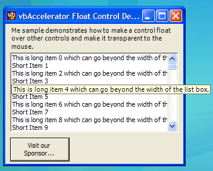

Floating Control Code and Demonstration (138K)
Floating Control Code and Demonstration (138K)
 1 Nov 2003
1 Nov 2003
First Posted

Floating Controls, Tooltip-style
Create custom information tips with this extension to the standard Framework control.
This article started when I was implementing the VS.NET ListBar control. If you move the mouse over an item whose text is partially obscured in the VS.NET ListBar, a popup appears to show more of the text. The same technique is also implemented in the ListView and TreeView controls using a ToolTip. Whilst the tooltip control provided in the .NET Framework is easy to use, it isn't customisable to perform these sort of effects. Hence, the control provided in this article, which derives from a standard .NET Framework Control and allows the control to be shown floating anywhere on the screen. In addition to that, it behaves as if it were transparent to any mouse events, so events over the control are transmitted directly to any underlying control. VB.NET and C# versions of the code are provided.
About Floating Control
Normally a control has a parent window associated with it. This tells Windows that when the control is drawn, it should be clipped by the parent window that contains it. However, it is possible to set a control so it doesn't have a parent, in which case its parent is the Windows Desktop. If you do this, however, you have to be careful since the .NET Framework, and to some extent Windows itself, expects certain types of Windows to have particular behaviours. Once a control has been floated, it probably won't be able to do much with key events, and it can interfere with determining which Window should be active not to mention mouse processing such as the MouseEnter and MouseLeave events. This limits what you can use a floating control for, but it leaves the way open for floating tooltip and informative popups.
Creating a Floating Control
There are two main things that you need to do to convert a standard control into a floating one:
- Ensure that the control is owned by the desktop, rather than a particular form or control, and set the styles of the control's window so that Windows sees it as a valid floating window.
- Make the control transparent to the mouse, so mouse events over the floating control are forwarded to their rightful owner. As noted before, if you don't do this then you will start seeing spurious activation and mouse event-related problems.
These techniques require a dash of unmanaged code, but are easy to do.
1. Setting Parent and Styles.
Windows provides API calls which allow you to modify the style of a Window (the GetWindowLong and SetWindowLong functions), but the best way to ensure the correct style is set is to set it when a control is created, as sometimes the changed styles don't take if you set them later. The .NET Framework allows you to modify the style of a window as it is created by overriding the CreateParams property. This allows you to do two things: firstly, to suggest to Windows that the control should not have a parent window and secondly to set the styles that are used. For a floating control, we want the styles WS_EX_NOACTIVATE (so the mouse doesn't activate the window), WS_EX_TOOLWINDOW (so it doesn't appear in the task list) and WS_EX_TOPMOST (so it floats above all other Windows). The code to achieve this is as follows:
private const int WS_EX_TOOLWINDOW = 0x00000080;
private const int WS_EX_NOACTIVATE = 0x08000000;
private const int WS_EX_TOPMOST = 0x00000008;
/// <summary>
/// Get the <see cref="System.Windows.Forms.CreateParams"/>
/// used to create the control. This override adds the
/// <code>WS_EX_NOACTIVATE</code>, <code>WS_EX_TOOLWINDOW</code>
/// and <code>WS_EX_TOPMOST</code> extended styles to make
/// the Window float on top.
/// </summary>
protected override CreateParams CreateParams
{
get
{
CreateParams p = base.CreateParams;
p.ExStyle |= (WS_EX_NOACTIVATE | WS_EX_TOOLWINDOW | WS_EX_TOPMOST);
p.Parent = IntPtr.Zero;
return p;
}
}
Once this has been done, we need a method to show the form in its floating state without the Framework attempting to route input focus or attempting to associate the control with a parent. This is done using a the ShowWindow API call:
[DllImport("user32")]
private static extern int SetParent(
IntPtr hWndChild,
IntPtr hWndNewParent);
[DllImport("user32")]
private static extern int ShowWindow(
IntPtr hWnd,
int nCmdShow);
/// <summary>
/// Shows the control as a floating Window child
/// of the desktop. To hide the control again,
/// use the <see cref="Visible"/> property.
/// </summary>
public void ShowFloating()
{
if (this.Handle == IntPtr.Zero)
{
base.CreateControl();
}
SetParent(base.Handle, IntPtr.Zero);
ShowWindow(base.Handle, 1);
}
The additional SetParent call is needed even though we specified the desktop during the CreateParams override since all .NET Framework controls are by default associated with a hidden "WindowsFormsParkingWindow" which you can investigate using Windows Spy if the mood takes you.
2. Making a Control Transparent to the Mouse
Whenever the mouse moves over the surface of a control, Windows sends the WM_NCHITTEST message to ask the object what part of the UI it is over. The response to this message then tells Windows what type of mouse cursor should be shown and how the mouse will respond if it is clicked. The list of codes you can return is as follows:
- HTERROR (-2)
- HTTRANSPARENT (-1)
- HTNOWHERE 0
- HTCLIENT 1
- HTCAPTION 2
- HTSYSMENU 3
- HTGROWBOX 4
- HTMENU 5
- HTHSCROLL 6
- HTVSCROLL 7
- HTMINBUTTON 8
- HTMAXBUTTON 9
- HTLEFT 10
- HTRIGHT 11
- HTTOP 12
- HTTOPLEFT 13
- HTTOPRIGHT 14
- HTBOTTOM 15
- HTBOTTOMLEFT 16
- HTBOTTOMRIGHT 17
- HTBORDER 18
- HTOBJECT 19
- HTCLOSE 20
- HTHELP 21
You can have some fun playing with these; for example by returning HTCAPTION you can make any area of a form or control act as if it were a title bar, and when you click on the area the object will start to move just like clicking on a real title bar. But in this case the aim is to make the control look as if it wasn't there, which is achieved by returning HTTRANSPARENT.
To do this in a control, all we need do is override the standard WndProc with one which performs specific processing for WM_NCHITTEST:
private const int WM_NCHITTEST = 0x0084;
private const int HTTRANSPARENT = (-1);
/// <summary>
/// Overrides the standard Window Procedure to ensure the
/// window is transparent to all mouse events.
/// </summary>
/// <param name="m">Windows message to process.</param>
protected override void WndProc(ref Message m)
{
if (m.Msg == WM_NCHITTEST)
{
m.Result = (IntPtr) HTTRANSPARENT;
}
else
{
base.WndProc(ref m);
}
}
Using FloatControl
The demonstration application shows two ways you might want to use this code in a real-world application. The first is to provide floating tips for a ListBox control whenever an item is truncated, and the second is to display a custom info-tip which shows a graphic when the user hovers over a button.
To set up the control for use, do not use the Windows Forms Designer to create an instance of the control. If you do this, the control will be associated with a particular form and may not pop-up correctly. Instead, you write the code that Windows Form Designer does yourself to create the control. In the demonstration, this code is included in the constructor for the form following the designer's own InitializeComponent call. In VB.NET, the code looks like this:
Me.sponsorMessage = New vbAccelerator.Components.Controls.FloatControl()
Me.sponsorMessage.BackgroundImage = picRes.Image
Me.sponsorMessage.Name = "sponsorMessage"
Me.sponsorMessage.TabStop = False
Me.sponsorMessage.Visible = False
Me.sponsorMessage.Size = picRes.Image.Size
In this case I've used the image from a PictureBox on the form for the image on the control, but it could equally be loaded from a resource associated with the assembly.
Once that's done you simply need to decide when to show and hide the floating Window. For the floating tip displayed over the button, the control is shown in response to the MouseHover event (which fires shortly after the mouse first enters the control) and is hidden again during the MouseLeave event.
Private Sub btnHover_MouseHover( _
ByVal sender As Object, ByVal e As System.EventArgs _
) Handles btnHover.MouseHover
If Not (sponsorMessage.Visible) Then
Dim pt As Point = btnHover.Location
pt.Offset(0, btnHover.Height / 2)
pt = Me.PointToScreen(pt)
sponsorMessage.Location = pt
sponsorMessage.ShowFloating()
End If
End Sub
Private Sub btnHover_MouseLeave( _
ByVal sender As Object, ByVal e As System.EventArgs _
) Handles btnHover.MouseLeave
If (sponsorMessage.Visible) Then
sponsorMessage.Hide()
End If
End Sub
The ListBox sample is a little more sophisticated as it needs to detect the size of the ListItem that the mouse is floating over, but fundamentally it uses the same technique. One thing to note is that the current implementation does not suppress the popup window after a mouse click on an item. This could easily be fixed by creating an interlock so that the window is not shown again until the mouse has moved at least a small distance away from the mouse down point.
Conclusion
This article provides a simple control you can use to create customised information pop-ups in .NET Windows Forms applications. Judicious use of popup controls can let you cram more onto the screen without compromising usability of an application.